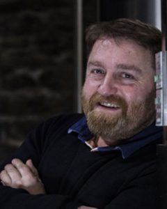
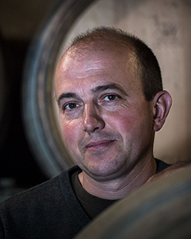

Le Domaine
Jean-Gérard Guillot,
le créateur du Domaine
Le 27 mai 2008 disparaissait à l'âge de 63 ans, Jean-Gérard GUILLOT, le créateur du Domaine Guillot-Broux. Ses fils, Emmanuel et Patrice, lui rendent hommage par ces quelques mots.
C'est d'abord à Brouilly qu'il travaille au Domaine de la Chanal, puis il passe plusieurs années à Meursault au Domaine Bernard MICHELOT. En 1978, il revient à Cruzille où, avec à peine un hectare, des convictions et du travail, il fonde avec notre mère, Jacqueline, le Domaine Guillot-Broux (Broux étant son nom de jeune fille).
Notre père était un vigneron, un homme de la terre, de la vigne, et du vin. C'était aussi un paysan, un homme de son pays qu'il aimait par-dessus tout. Même s'il est toujours difficile d'aimer un pays pour ce qu'il est au-delà des intérêts économiques. Il travaillait le jour, et lisait la nuit.
Passionné par les romans sur les bâtisseurs de cathédrales ; il aimait cette quête lorsqu'elle unie les hommes. Il aimait aussi la chasse ; pas celle qui détruit aveuglément, celle qui respecte la nature. Il faut connaître un milieu, pour mieux le respecter. L'homme fait partie intégrante de la nature même si bien souvent il l'oublie…
Il aimait sa famille, ses enfants, ses petits-enfants, à qui il a toujours tout transmis, ses passions, ses lectures, son savoir, ses terres.
Le vignoble et ses vignerons
Nous dirigeons aujourd'hui le domaine avec une équipe de 7 personnes.


17 hectares,
3 villages,
un style unique
Les 17 hectares de vignes s'étendent sur 3 villages : Cruzille, Grévilly et Chardonnay répartis en 3 appellations Bourgogne, Mâcon Cruzille et Mâcon Chardonnay. Les vignes sont essentiellement situées sur des coteaux orientés à l'est pour un ensoleillement maximal et sur des sols argilo-calcaires idéaux pour leur développement. Les formations géologiques différentes personnalisent chaque terroir, et les vins qui en résultent.
Le village de Cruzille produit des vins d'une grande minéralité qui nécessitent toujours beaucoup de temps pour s'exprimer, ceci s'explique par la nature des sols. Les vins de Grévilly et Chardonnay sont produits sur des sols plus profonds. Ils sont souvent plus charmeurs et plus fruités dans leur jeunesse. Chaque parcelle est vinifiée séparément, mais seuls les grands terroirs sont commercialisés individuellement.

de vignes
Cruzille · Grévilly · Chardonnay
Bourgogne · Mâcon
dans l'équipe
Vins d'une grande minéralité qui nécessitent toujours beaucoup de temps pour s'exprimer. La nature des sols, calcaire et pierreux, explique ce caractère singulier.
Sols plus profonds. Vins souvent plus charmeurs et plus fruités dans leur jeunesse. Chardonnay Muscaté rarissime — les vignes Les Molières datent de 1936.
Le village qui a donné son nom au cépage. Sols profonds, vins concentrés et charmeurs dans leur jeunesse, avec une belle richesse aromatique.
Des noms porteurs d'histoires…
Combettes, Geniévrières, Perrières, Beaumont — ces vins aux noms vieux de plusieurs siècles (Perrières : pierres ; Combettes : petite combe, etc…) résultaient de l'observation et du savoir-faire des hommes. Les Bénédictins et les Cisterciens transcriront ces noms ainsi que tout ce savoir-faire à travers toute l'Europe. Ce sont les noms des parcelles figurant sur le cadastre Napoléonien.
— Ralph Waldo Emerson

Le berceau du bio
en Bourgogne
Le domaine est contrôlé et certifié en agriculture bio depuis 1991. Cela se traduit par l'emploi d'engrais verts, la lutte naturelle contre les parasites, les labours et l'emploi de produits de traitements non polluants (produits constitués de molécules actives stables).
Le respect de la vie microbienne des sols permet à la vigne, grâce à ses micro-organismes, d'aller puiser au bout des racines tous les éléments nécessaires et indispensables à son bon équilibre. Cette notion est fondamentale pour obtenir ce que l'on appelle un vin de terroir.
D'une manière générale la maladie est le signe d'un déséquilibre, aussi cherchons-nous davantage à trouver l'équilibre plutôt qu'à traiter les conséquences.
L'anecdote : Cruzille, le berceau du bio en Bourgogne…
En 1954, ce sont nos grands-parents Pierre et Jeannine GUILLOT, qui créent le premier domaine viticole biologique de Bourgogne. Par philosophie et suite à des rencontres, comme Max LEGLISE, directeur de l'INRA et auteur de plusieurs livres sur le sujet, André BIRE ou Jules CHAUVET, ils se lancèrent seuls dans l'aventure des vins biologiques.
Vinification traditionnelle
Les vendanges sont faites manuellement et le tri des raisins est effectué à la vigne avant d'être acheminé vers la cuverie ce qui permet de les récolter sains et à bonne maturité. Les rendements sont maîtrisés pour obtenir entre 30 et 55 hectolitres/hectare — une recherche de la qualité, et non de la quantité.
La densité de plantation élevée accroît la concurrence entre les pieds et concentre les éléments sur chaque raisin. L'important est d'avoir naturellement peu de raisin par pied pour augmenter la concentration aromatique et l'équilibre du vin. La taille en Guyot Simple pour les blancs et en Cordon de Royat pour les rouges favorise cette quête.
Chaque terroir est vinifié séparément et différemment en fonction du cépage, de la nature des sols, du millésime et de l'âge des vignes. Les meilleures parcelles sont revendiquées après un âge minimum de dix ans. Quelle que soit le cépage, nous ne pratiquons aucun levurage. De plus, nous limitons l'emploi de sulfites et de la chaptalisation au strict minimum.

Vins Blancs — Chardonnay
Vins Rouges — Pinot Noir & Gamay
Adresse
Le Bourg
71260 Cruzille
Mâconnais, Bourgogne
Téléphone
+33 (0)3 85 33 29 74
+33 (0)3 85 34 31 53
domaine.guillotbroux
@wanadoo.fr
Caveau — Horaires
Lun–Ven
8h30–12h · 14h–18h
Sam–Dim sur RDV